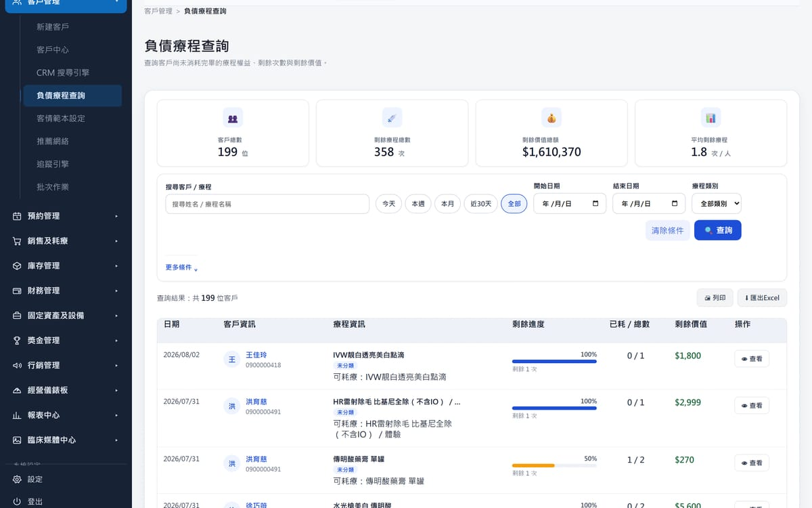
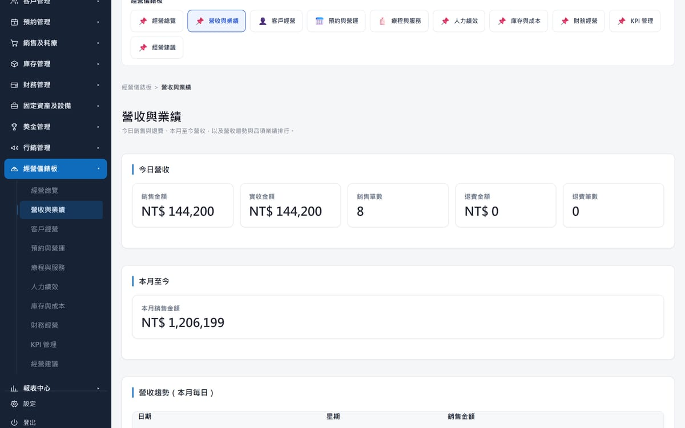
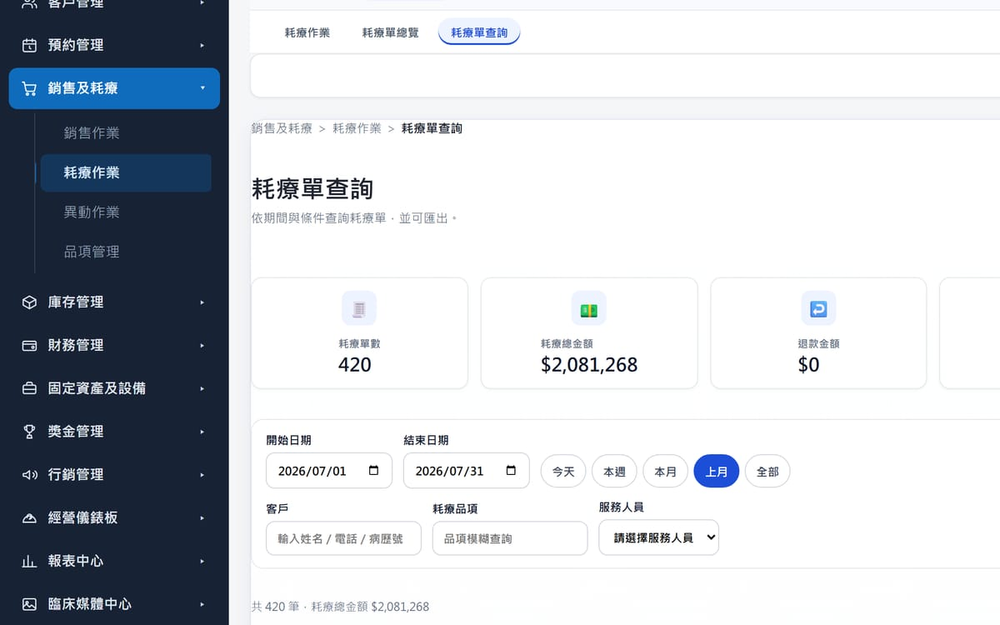
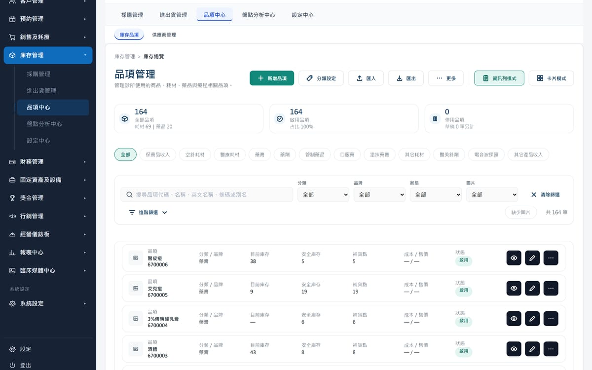
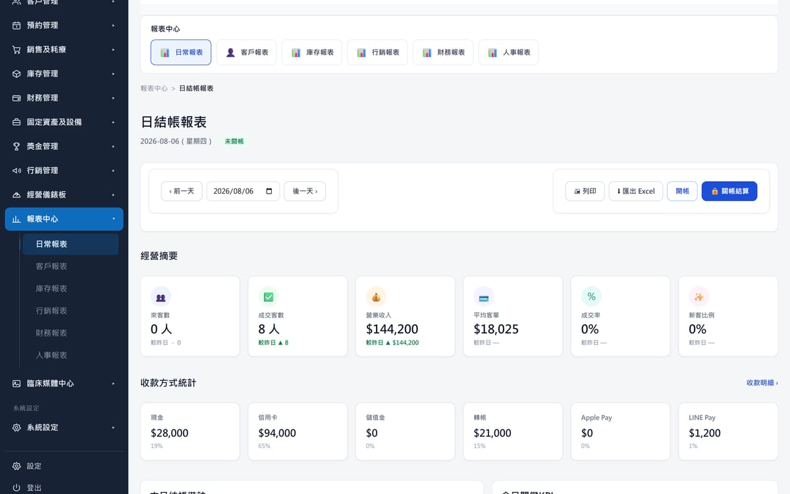
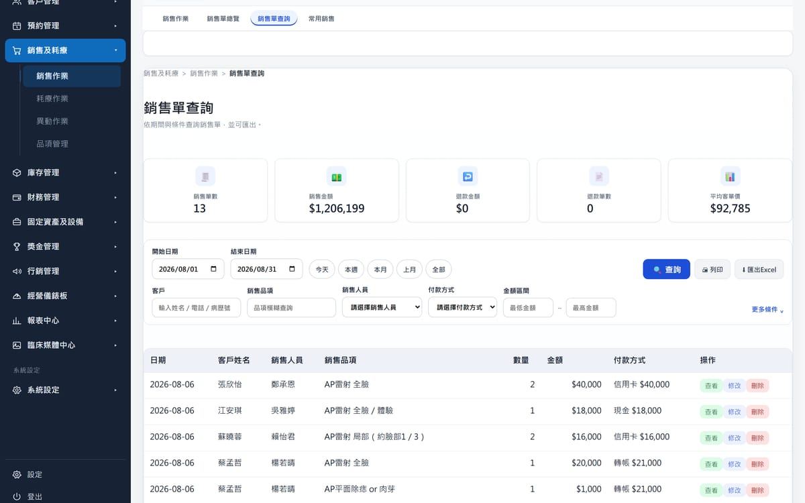

02
客戶概況
客戶手上還留著多少沒做完的療程，就是診所還欠著多少服務——那是責任，也是下一次見面的理由。

Chapter 05
每一個決策，
都來自看得見的經營。
經營診所，不是每天看報表。
而是每天知道：下一步該做什麼。

01
收入只是結果。真正重要的是知道收入從哪裡來，以及今天是否達成預期。
02
客戶手上還留著多少沒做完的療程，就是診所還欠著多少服務——那是責任，也是下一次見面的理由。

03
看懂哪些療程真的被做掉、做了多少、平均一次多少錢，才知道資源該放在哪裡。

04
真正好的管理，不是缺貨才補貨。安全庫存與補貨點就擺在品項旁邊，該叫貨的時候自己會說話。

05
每一筆收入都應該清楚、有依據、能被核對——收了多少、用什麼方式收的，一天結束前就對得完。

06
數據不是用來記錄昨天，而是用來判斷明天。指定一個月份，筆數、金額、平均客單與付款結構就一次攤開。

本頁六張畫面皆為 ClinicOS 展示環境的實際操作畫面，資料期間分別為 2026 年 7 月與 8 月。 畫面中的姓名、品項與金額皆為示範資料，不對應任何真實顧客或診所。